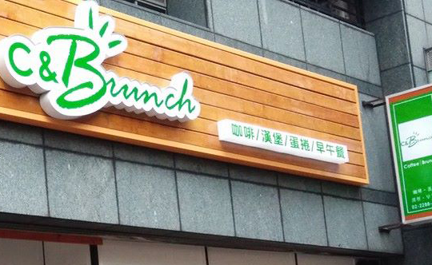
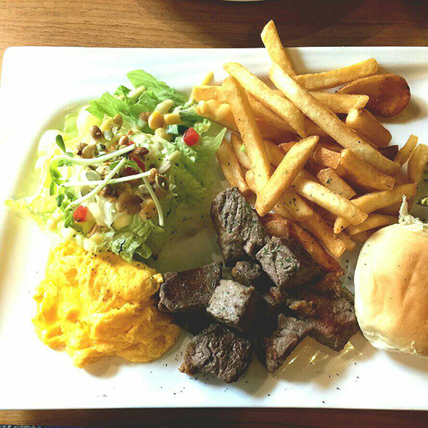
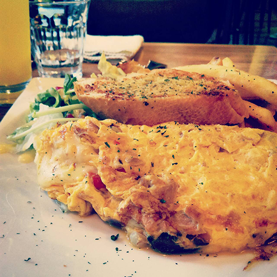
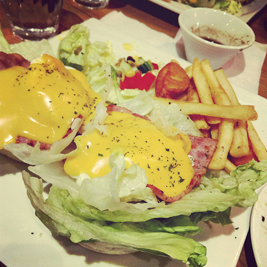

美式餐點店比比皆是，類型與花樣更是百花齊放，無不奇怪。
想必大多數的人對於美式餐點店的價位認知是畢恭畢敬，不敢恭維啊!
今天要介紹的是小資也能享用四顆星等級般的美式餐點店。
這間店位於新北市蘆洲區的一間小巷子裡，
招牌是清新舒服的翠綠色，彷彿讓人聯想猶如在大自然的懷抱中，和一般美式風格的店不太一樣的設計，
店面外觀採用透明式落地窗，可一目了然店內的風采。
店內的位置不多空間也算小，但用餐及走動不會空間狹小或難以走動，

骰子牛早午餐 NT$190
鮪魚歐姆蛋捲 NT$170
培根班尼迪克蛋 NT$170
看完三張是否已經肚子咕嚕咕嚕叫了呢~
當每樣餐點由服務生的手中端上桌的那刻至拿起刀叉一口接一口都是驚艷啊~
想吃義大利麵或燉飯在這邊也找得到，配上套餐+NT$39~NT$199任你自由搭，
這裡的食物各個物超所值，價位落在NT$100~200區間，
哪裡找得到這麼親民可人的美式食物餐點，而且!不加服務費!!
喜歡美式食物的饕客們值得來一趟，不會後悔的滿足你的味蕾!
C&Brunch
地址:新北市蘆洲區三民路81-2號(得勝街口)
fb粉絲頁:https://www.facebook.com/coffeebrunch140811